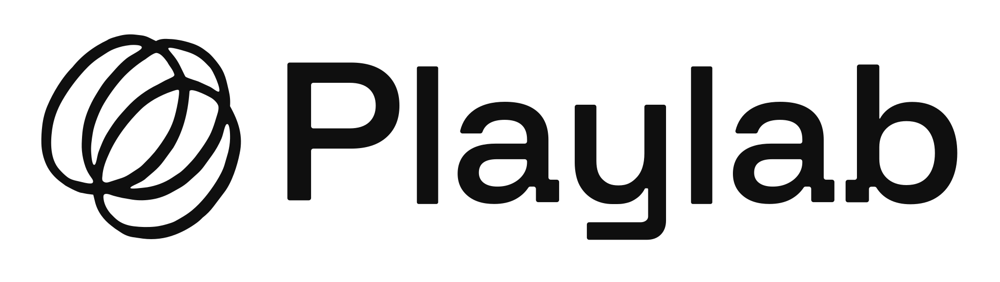
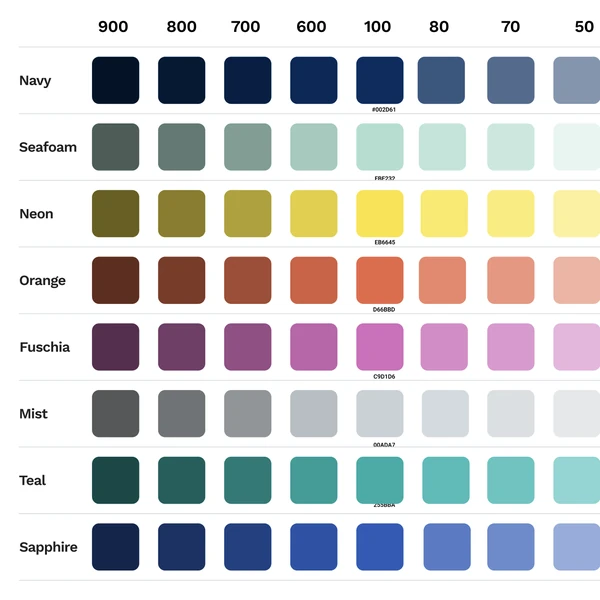

A designer who builds with AI and understands how people learn. Hi, I'm Rahul.
I've spent five years designing for students and the educators who guide them, and building an AI tutor in my spare time.
Chiron: building a personalized, Socratic tutor out of an LLM
Treating an LLM as a design material: a Claude skill that turns any conversation into a Socratic micro-course, with simulations it codes on the spot and knowledge checks you must pass to move on.
View on GitHub (opens in new tab)Encourage for Educators: designing for the counselor's workflow
The counselor side of Encourage, built around how guidance staff already organize their day, so they can track hundreds of students and see who's stuck and why.
Shipped
Encourage: asking students for 2x the data without dropping completion
When the onboarding survey for 150,000+ students had to double in length, I watched it in real classrooms, rebuilt the flow around where students stalled, and held completion near 84%.
Shipping Fall 2026
A specialist in a bit of everything
Product design is home base, with motion, analytics and design systems around it. I build my own tooling too: this site and the scripts that preview and publish it are all written with Claude Code.



How I made this page
I built this page with Claude Code. We pulled Playlab's colors and type straight from the CSS variables on playlab.ai, laid them out as a moodboard on a Claude design canvas, and tried my portfolio on in their style there before building it into the real site, checking contrast along the way.